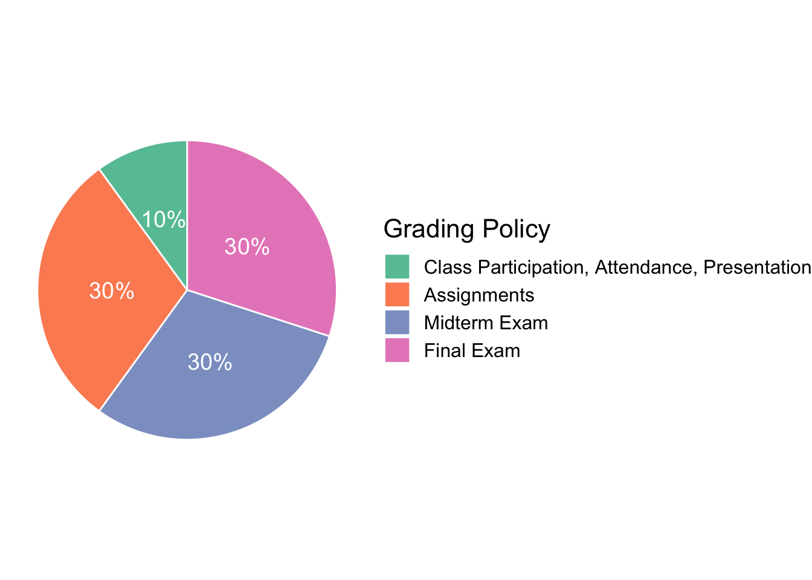

This site is last-updated on 2019-12-09
Important course information will be posted on this web page and announced in class. You are responsible for all material that appears here and should check this page for updates frequently.
This course aims to introduce theories and practices of Corpus Linguistics as a scientific discipline of its own. Corpus Linguistics has now been considered an interdisciplinary subject, requiring knowledge of linguistic theories, quantitative statistics and data processing. Therefore, this course aims to provide the necessary foundation as well as computational skills for students who are interested in conducting corpus-based linguistic research or language-related research. Students are expected to learn:
This course is extremely hands-on and will lead the students through classic examples of these corpus-based applications via in-class tutorial sessions and take-home assignments. The main objective of this course is to provide students enough computational skills to perform similar corpus-based analyses on their own data or research questions. Also, it will provide specific hands-on tutorials to equip students with the necessary skills of text and statistical processing. This course will be a prerequisite for more advanced courses such as Computational Linguistics and Quantitative Corpus Linguistics.
| Week | Date | Topic |
|---|---|---|
| Week 1 | 2020-02-17 | Orientation |
| Week 2 | 2020-02-24 | Corpus Linguistics: Fundamentals |
| Week 3 | 2020-03-02 | R Fundamentals I |
| Week 4 | 2020-03-09 | R Fundamentals II |
| Week 5 | 2020-03-16 | Data Collection and Corpus Creation: HTML and Web Crawler |
| Week 6 | 2020-03-23 | Concordances, Frequency Lists, Collocations |
| Week 7 | 2020-03-30 | Tokenization |
| Week 8 | 2020-04-06 | Holiday |
| Week 9 | 2020-04-13 | Midterm Exam |
| Week 10 | 2020-04-20 | N-grams and Lexical Bundles |
| Week 11 | 2020-04-27 | Parts-of-Speech Tagging |
| Week 12 | 2020-05-04 | Data Retrieval and Coding: Regular Expressions |
| Week 13 | 2020-05-11 | Data Retrieval and Coding: Experimental Design |
| Week 14 | 2020-05-18 | Statistical Evaluation I: Significance Test |
| Week 15 | 2020-05-25 | Statistical Evaluation II: Case Studies |
| Week 16 | 2020-06-01 | Chinese Text Analytics |
| Week 17 | 2020-06-08 | Keyword Analysis |
| Week 18 | 2020-06-15 | Final Exam |

All the course materials are available on the course website. Please consult the instructor for the direct link to the course materials. They will be provided as a series of online packets (i.e., handouts, script source codes etc.) on the course website. These teaching materials are based on the following recommended readings.
You can reach me at alvinchen@ntnu.edu.tw.
By appointment.
While I have made every attempt to ensure that the information contained on the Website is correct, I am not responsible for any errors or omissions, or for the results obtained from the use of this information. All information on the Website is provided “as is”, with no guarantee of completeness, accuracy, timeliness or of the results obtained from the use of this information, and without warranty of any kind, express or implied.
You may print a copy of any part of this website for your personal or non-commercial use. Without the author’s prior written consent, you cannot disclose confidential information of the website (e.g., log-in username and password) to any third party.